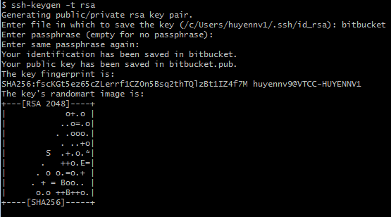

Use SSH key with git
Thành phần của một SSH key
Khi tạo ra một SSH key, bạn cần biết sẽ có 3 thành phần quan trọng như sau:
- Public Key (dạng file và string) – Bạn sẽ copy ký tự key này sẽ bỏ
vào file
~/.ssh/authorized_keystrên server của bạn. - Private Key (dạng file và string) – Bạn sẽ lưu file này vào máy tính, sau đó sẽ thiết lập cho PuTTY, WinSCP, Git Bash,.. để có thể login.
- Keyphrase (dạng string, cần ghi nhớ) – Mật khẩu để mở private key, khi đăng nhập vào server nó sẽ hỏi cái này.
Và một SSH key bạn có thể sử dụng cho nhiều server khác nhau.
Keyphrase là không bắt buộc. Nếu bạn không nhập thì những lần sau khi sử dụng bạn sẽ không phải điền.
Tạo SSH key
Nếu bạn đang sử dụng Linux thì không cần phần mềm mà sẽ sử dụng Terminal để tạo. Hãy mở Terminal lên và gõ:
$ ssh-keygen -t rsa
Nó sẽ hỏi bạn muốn lưu private key này vào đâu, mặc định nó sẽ lưu vào
~/.ssh. Bạn có thể để trống và Enter.
Nếu bạn muốn nhiều key thì bạn phải đặt nó ở các file khác nhau.
Tiếp tục nó sẽ hỏi bạn có muốn thiết lập keypharse không, nếu muốn thì nhập keypharse cần thiết lập vào rồi Enter.
Trong đó bạn có thể thấy nó có ghi đường dẫn lưu file private key (id_rsa)
và file public key (id_rsa.pub).
Trong trường hợp trên, do tôi đặt lên tên file là bitbucket nên sẽ có 2
file bitbucket và bitbucket.pub.
Cài đặt public key cho tài khoản Bitbucket
Mở trình duyệt và đăng nhập tài khoản Bitbucket.
Trên menu bên phải, click chọn Avatar > Manage Account.

Click SSH keys: Trang sẽ hiển thị danh sách các khóa SSH bạn đã thêm từ các máy khác nhau.
Copy toàn bộ nội dung khóa công khai đã tạo ở trên: ~/.ssh/id_rsa.pub.
Click chọn Add key, đặt tên và dán nội dung file id_rsa.pub
vào ô tương ứng:

Click Add key, để thêm vào tài khoản của bạn.
Nạp ssh key tự động
ssh-agent là trình quản lý SSH key của bạn.
Mỗi khi mở Git Bash, đánh các lệnh sau:
$ ssh-agent
$ ssh-add ~/.ssh/id_rsa
Chúng ta cần làm 1 việc cho thuận tiện khi làm việc với Git là nạp SSH
key tự động mỗi khi chạy Git Bash. Để làm vệc này ta tạo một file với tên ~/.bashrc với nội dung như sau:
Cấu hình SSH config file
Mở (hoặc tạo mới) file ~/.ssh/config.
Thêm toàn bộ nội dung file như sau đây:
Host bitbucket.org IdentityFile ~/.ssh/id_rsa
Dòng thứ 2 thụt vào 1 khoảng trắng. Là đường dẫn chỉ đến file private key mà ta đã tạo ở trên.
Lưu và đóng file lại.
Khởi động lại Git Bash.
CẤU HÌNH SSH-KEY CHO NHIỀU TÀI KHOẢN GIT TRÊN MỘT MÁY TÍNH CÁ NHÂN
1. Chuẩn bị
Mình sẽ sử dụng 2 server git chính và ở đây là github và bitbucket. Môi trường sẽ là Mac và Linux. Tài khoản mình sẽ có 3 tài khoản, 2 tài khoản bitbucket và 1 tài khoản github. Bạn cũng chuẩn bị luôn 3 project tương ứng để test tương ứng với 3 tài khoản.
Giả sử mình có các tài khoản + server git + project tương ứng như này:
- Server Bitbucket
- User: nguyenmanh9x / email: nguyenmanh9x@gmail.com | project sample1
- User: manh.nguyen / email: manh.nguyen@gmail.com | project sample2
- Server Github
- User: manhhip / email: nguyenmanh9x@gmail.com | project sample 3
Tương ứng với 3 tài khoản trên các bạn sẽ phải tạo 3 bộ ssh-key tương ứng để cấu hình ssh tới server git. Trên màn hình command bạn làm các thao tác sau:
$ cd ~/.ssh
$ ssh-keygen -t rsa –C "option_email"
This creates a new ssh key, using the provided email as a label.
(option_email bạn có thể điền email account của mình hoặc tùy ý hoặc ko điền cũng được). => Nhập tên cho bộ ssh-key tương ứng.
Gợi ý là bạn lên đặt gần giống user git để sau này có nhìn lại key cũng phân biệt cho dễ. => Lặp lại thao tác này 3 lần để có 3 bộ key khác nhau. Sau khi hoàn tất mình có 3 bộ key (private và public) như thế này
- nguyenmanh9x / nguyenmanh9x.pub
- manhnguyenkey / manhnguyenkey.pub
- manhhipkey / manhhipkey.pub
OK giờ đi cấu hình cho các hệ điều hành tương ứng nào.
Cấu hình với hệ điều hành Mac OSX
Bạn cần tạo file config trong thư mục ~/.ssh. Tiến hành vi ~/.ssh/config. Thêm vào file này thông tin như sau:
Host bitbucket.org HostName bitbucket.org User nguyenmanh9x IdentityFile ~/.ssh/nguyenmanh9xkey Host bitbucket.org HostName bitbucket.org User manh.nguyen IdentityFile ~/.ssh/manhnguyenkey Host github.com User manhhip IdentityFile ~/.ssh/manhhipkey
Save lại file config. Vẫn chưa xong bạn cần phải add các file private key để đảm bảo các file này được lưu trữ lại. Trên cửa số dòng lệnh bạn thực hiện các lệnh
cd ~/.ssh eval `ssh-agent -s` ssh-add nguyenmanh9xkey && ssh-add manhnguyenkey && ssh-add manhhipkey
Bước cuối cùng là thử clone các repo thui nào. Lên 3 sever repo git tương ứng của bạn, chọn link để clone repo, thay vì clone bằng https thì giờ bạn clone repo với ssh. Sau khi lấy hoàn chỉnh mình có 3 link repo như sau.
- git@bitbucket.org:masterjsteam/sample1.git
- git@bitbucket.org:demo_team/sample2.git
- git@github.com:hard_team/sample3.git
(Các phần team kia chỉ là các team tương ứng với project của mình thôi, khi bạn lấy về bạn cũng sẽ có team tương ứng mà bạn tạo).
Chưa vội clone với các link này bạn cần thay đổi lại 1 chút các đường link ở trên bằng cách thay tiền tố git ở trước bằng user tương ướng với tài khoản git của bạn. Các link của mình sau thay thế sẽ trông giống như thế này
- nguyenmanh9x@bitbucket.org:masterjsteam/sample1.git
- manh.nguyen@bitbucket.org:demo_team/sample2.git
- manhhip@github.com:hard_team/sample3.git
Giờ hãy thử clone 1 repo để test với SSH key vừa add và config xem sao các bạn nhé.
Cấu hình với hệ điều hành Linux
Linux cách config về cơ bản khá giống với trên Mac. Có điều hơi khác 1 chút về cách điền thông tin ở file config và link remote origin của nó: (hiện tại mình config như trên môi trường mac nhưng mỗi lần thoát khỏi cửa sổ control thì phải ssh-add lại key đó ms sử dụng được, ko rõ do làm sao lên dưới đây là cách config lại của mình và đã apply thành công, các bác có ghé hay đi qua cho mình vài lời tư vấn vơi nhé :D)
Vẫn là các thông tin như trên, bạn edit config và thêm nội dung file config mới như sau:
Host bitbucket-acc1 HostName bitbucket.org PreferredAuthentications publickey IdentityFile ~/.ssh/nguyenmanh9xkey Host bitbucket-acc2 HostName bitbucket.org PreferredAuthentications publickey IdentityFile ~/.ssh/manhnguyenkey Host github-acc1 HostName github.com PreferredAuthentications publickey IdentityFile ~/.ssh/manhhipkey
Thay lại các remote server như sau:
- git@bitbucket-acc1:masterjsteam/sample1.git
- git@bitbucket-acc2:demo_team/sample2.git
- git@github-acc1:hard_team/sample3.git
Ok giờ bạn hay thử clone project với các remote như này coi sao nhé.
Vậy là với vài thao tác cơ bản bạn đã có thể thêm nhiều tài khoản git vào hệ thống và sử dụng ssh-key để thao tác với nhiều repo git thuộc các tài khoản khác nhau rồi. Chia sẻ cách mà bạn thực hiện cấu hình config để mọi người cùng biết thêm nhé :D.
Chuyển đổi
Thay đổi URL của repository cũ:
$ git remote set-url origin ssh://git@bitbucket.cyberspace.vn:7999/sn/safenet_front.git
Clone:
$ git clone ssh://git@bitbucket.cyberspace.vn:7999/sn/safenet_front.git
https://techmaster.vn/posts/34411/github-su-dung-ssh-hay-https